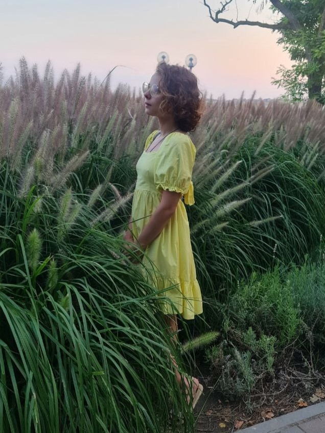
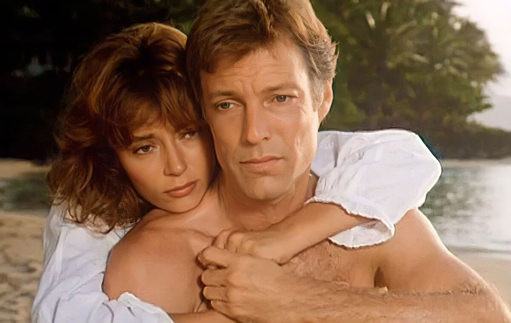
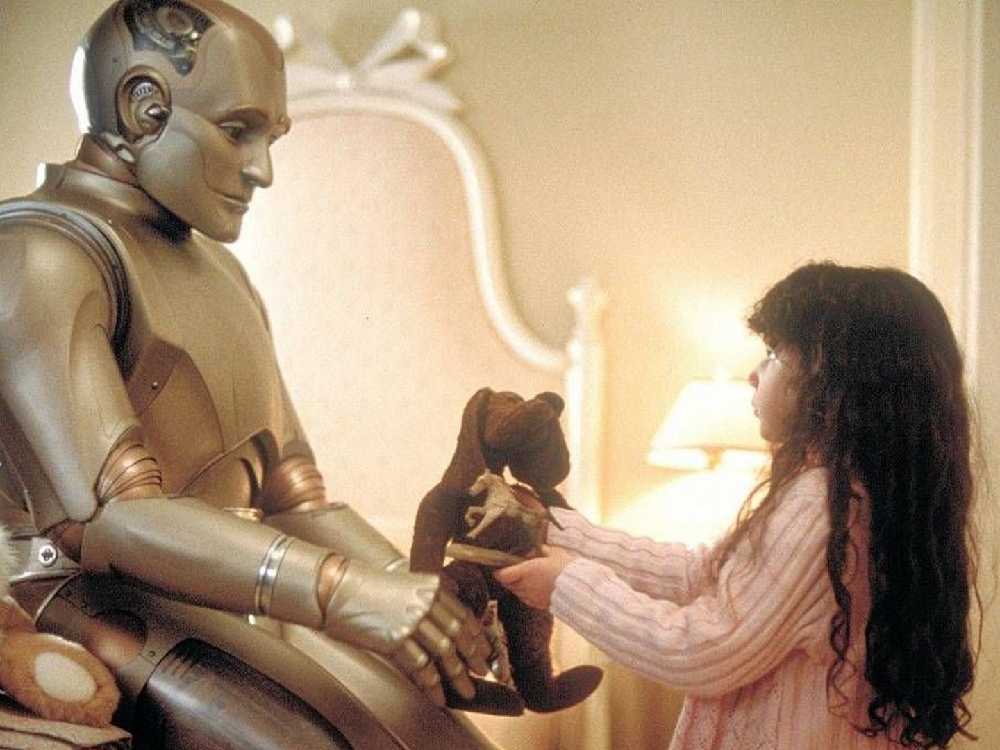
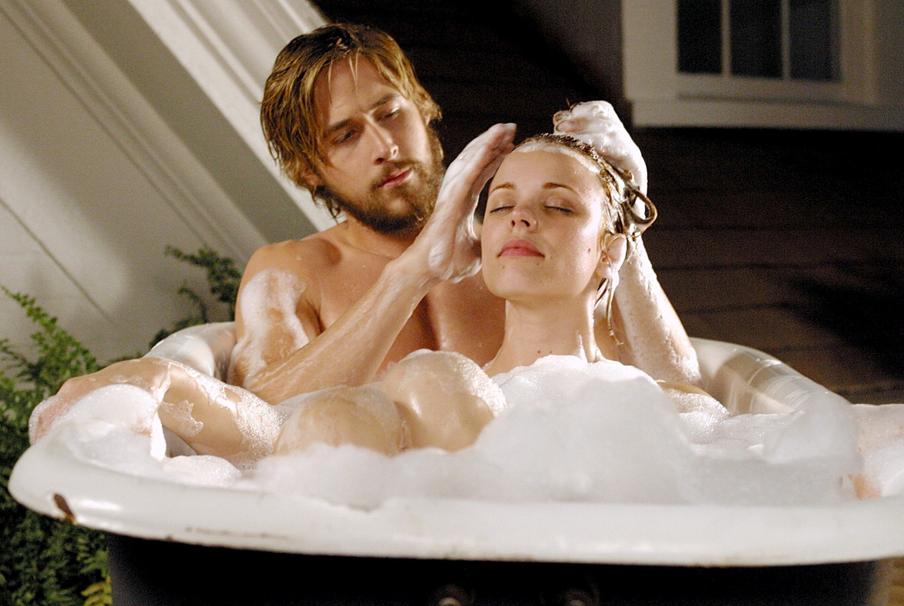
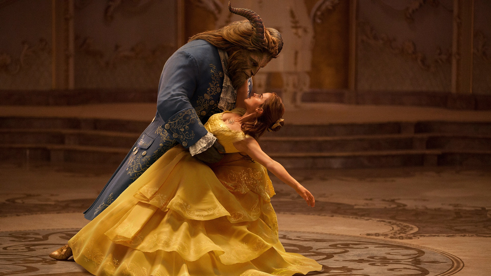
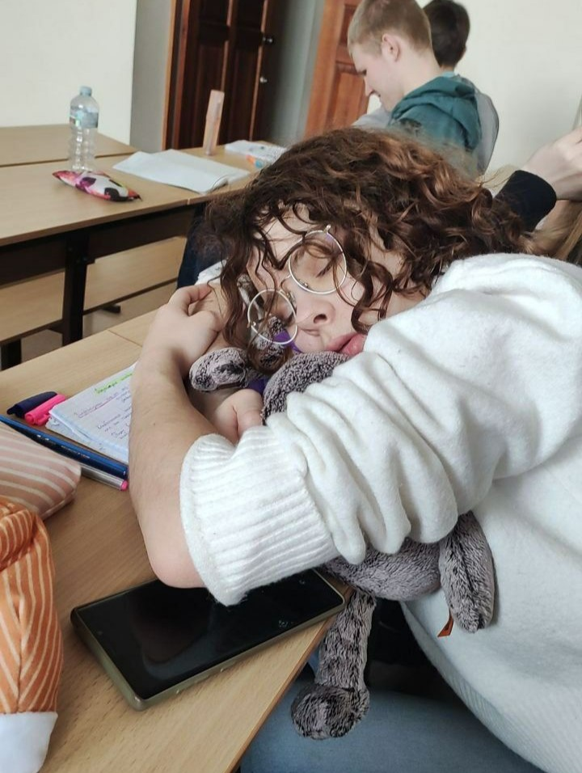
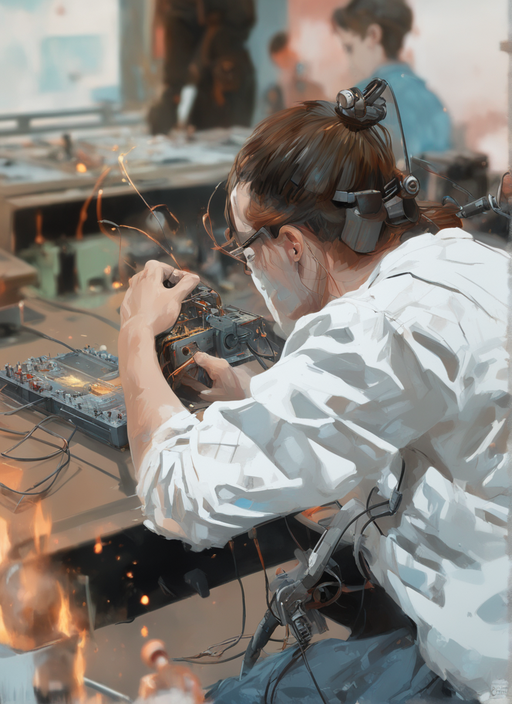
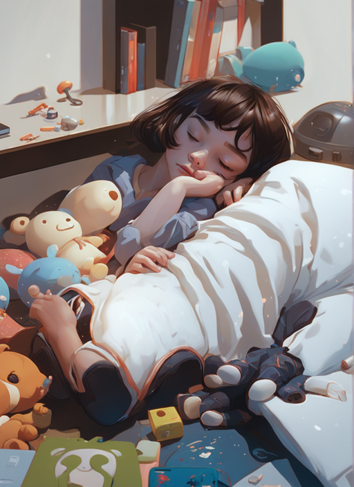
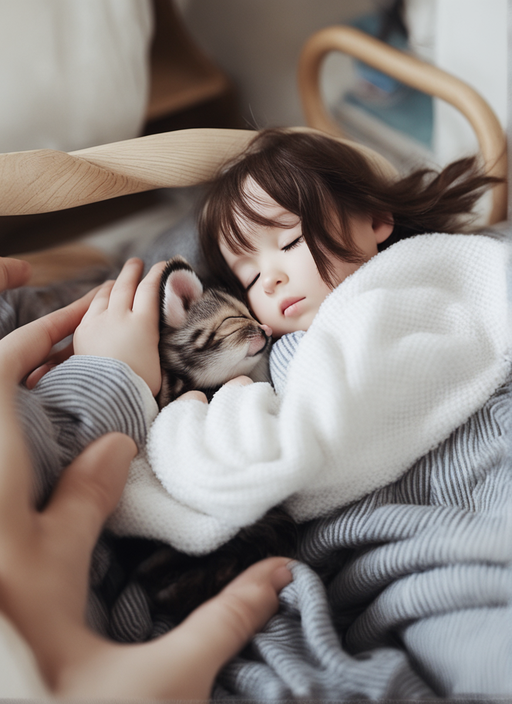

О себе

Здравствуйте, далекие пользователи интернета!
Меня зовут Замотохина Маша, и это мой первый сайт, сделанный только мною и никем больше!
Я коренная самарчанка, учусь в Самарском университете, на специальности ИБАС.
Да, я истинный Ибасенок.
Мое любиое хобби: вязать, вышивать и смотреть мультики, фильмы, сериалы или музыкальные шоу.
Меня зовут Замотохина Маша, и это мой первый сайт, сделанный только мною и никем больше!
Я коренная самарчанка, учусь в Самарском университете, на специальности ИБАС.
Мое любиое хобби: вязать, вышивать и смотреть мультики, фильмы, сериалы или музыкальные шоу.
Фильмы, которые мне нравятся:
- Дневник памяти(2007) 
- Поющие в теновнике(1983)
- Красавица и чудовище(2017) 
- Двухсотлетний человек(1999)


Музыка, которая мне нравится:
- Максим Фадеев & Наргиз: С любимыми не расставайтесь
- Nautilus Pompilius: Крылья
- Nautilus Pompilius: Прогулки по воде
- Sting: Fragile
- Dulces Pontes: Canção Do Mar
- Secret Garden: Song from a Secret Garden
Как со мной связаться:
Немного моих фоток(только моих, да-да)
|  | |
|  |  |
|  |